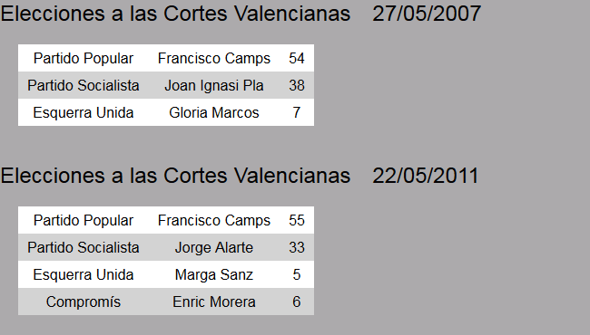
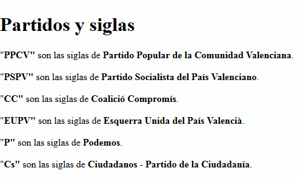

Resuelva los siguientes ejercicios guardando las respuestas en una carpeta cuyo nombre contenga su nombre y apellidos.
El siguiente documento no está bien formado porque contiene errores. Corrija los errores (si para corregir algún error hay que inventarse una etiqueta o atributo, utilice un nombre que tenga relación con la información contenida en el documento).
<?xml version="1.0" encoding="UTF-8"?><?xml version="1.0" encoding="UTF-8"?>
<equipos>
<equipo siglas=""RMCF">Real Madrid Club de Fútbol
<equipo siglas=""FCB">Fútbol Club Barcelona
<títulos>
<champions league año=2014 RMCF>
<liga española año=2015 FCB>
</equipos>
</títulos>
Escriba una hoja de estilo CSS para que el siguiente documento se vea en el navegador como muestra la imagen.
<?xml version="1.0" encoding="UTF-8"?>
<elecciones>
<eleccion>
<tipo>Elecciones a las Cortes Valencianas</tipo>
<fecha>27/05/2007</fecha>
<resultados>
<partido siglas="PPCV">
<nombre>Partido Popular</nombre>
<candidato>Francisco Camps</candidato>
<escaños>54</escaños>
</partido>
<partido siglas="PSPV">
<nombre>Partido Socialista</nombre>
<candidato>Joan Ignasi Pla</candidato>
<escaños>38</escaños>
</partido>
<partido siglas="EUPV">
<nombre>Esquerra Unida</nombre>
<candidato>Gloria Marcos</candidato>
<escaños>7</escaños>
</partido>
</resultados>
</eleccion>
<eleccion>
<tipo>Elecciones a las Cortes Valencianas</tipo>
<fecha>22/05/2011</fecha>
<resultados>
<partido siglas="PPCV">
<nombre>Partido Popular</nombre>
<candidato>Francisco Camps</candidato>
<escaños>55</escaños>
</partido>
<partido siglas="PSPV">
<nombre>Partido Socialista</nombre>
<candidato>Jorge Alarte</candidato>
<escaños>33</escaños>
</partido>
<partido siglas="EUPV">
<nombre>Esquerra Unida</nombre>
<candidato>Marga Sanz</candidato>
<escaños>5</escaños>
</partido>
<partido siglas="CC">
<nombre>Compromís</nombre>
<candidato>Enric Morera</candidato>
<escaños>6</escaños>
</partido>
</resultados>
</eleccion>
</elecciones>

Dado el siguiente documento XML, escriba las expresiones XPath que devuelvan exactamente las respuestas indicadas en los cuadros. Escriba todas las expresiones XPath en un único fichero de texto, numerando las respuestas.
<?xml version="1.0" encoding="UTF-8"?>
<elecciones>
<partidos>
<partido nombre="PPCV">Partido Popular de la Comunidad Valenciana</partido>
<partido nombre="PSPV">Partido Socialista del País Valenciano</partido>
<partido nombre="CC">Coalició Compromís</partido>
<partido nombre="EUPV">Esquerra Unida del País Valencià</partido>
<partido nombre="P">Podemos</partido>
<partido nombre="Cs">Ciudadanos - Partido de la Ciudadanía</partido>
</partidos>
<resultados>
<eleccion año="2007" nombre="Cortes Valencianas">
<fecha>27/05/2007</fecha>
<partido nombre="PPCV" candidato="Francisco Camps">54</partido>
<partido nombre="PSPV" candidato="Joan Ignasi Pla">38</partido>
<partido nombre="EUPV" candidato="Gloria Marcos">7</partido>
</eleccion>
<eleccion año="2011" nombre="Cortes Valencianas">
<fecha>22/05/2011</fecha>
<partido nombre="PPCV" candidato="Francisco Camps">55</partido>
<partido nombre="PSPV" candidato="Jorge Alarte">33</partido>
<partido nombre="CC" candidato="Enric Morera">6</partido>
<partido nombre="EUPV" candidato="Marga Sanz">5</partido>
</eleccion>
<eleccion año="2015" nombre="Cortes Valencianass">
<fecha>24/05/2015</fecha>
<partido nombre="PPCV" candidato="Alberto Fabra"></partido>
<partido nombre="PSPV" candidato="Ximo Puig"></partido>
<partido nombre="Cs" candidato="Carolina Punset"></partido>
<partido nombre="P" candidato="Antonio Montiel"></partido>
<partido nombre="CC" candidato="Mònica Oltra"></partido>
<partido nombre="EUPV" candidato="Ignacio Blanco"></partido>
</eleccion>
</resultados>
<encuestas>
<encuesta año="2011" nombre="Cortes Valencianas">
<fecha>15/05/2011</fecha>
<origen>El País</origen>
<partido nombre="PPCV">59</partido>
<partido nombre="PSPV">33</partido>
<partido nombre="CC">0</partido>
<partido nombre="EUPV">7</partido>
</encuesta>
<encuesta año="2015" nombre="Cortes Valencianas">
<fecha>18/05/2015</fecha>
<origen>Levante-EMV</origen>
<partido nombre="PPCV">27</partido>
<partido nombre="PSPV">20</partido>
<partido nombre="Cs">19</partido>
<partido nombre="P">14</partido>
<partido nombre="CC">13</partido>
<partido nombre="EUPV">6</partido>
</encuesta>
</encuestas>
</elecciones>
Partido Popular de la Comunidad Valenciana
Partido Socialista del País Valenciano
Coalició Compromís
Esquerra Unida del País Valencià
Podemos
Ciudadanos - Partido de la Ciudadanía
<fecha>15/05/2011</fecha> año="2011"
38
33
año="2007"
año="2011"
candidato="Francisco Camps"
candidato="Francisco Camps"
candidato="Alberto Fabra"
Dado el siguiente documento XML, escriba y enlace las hojas de estilo XSLT que devuelvan la respuesta deseada.
<?xml version="1.0" encoding="UTF-8"?>
<elecciones>
<partidos>
<partido nombre="PPCV">Partido Popular de la Comunidad Valenciana</partido>
<partido nombre="PSPV">Partido Socialista del País Valenciano</partido>
<partido nombre="CC">Coalició Compromís</partido>
<partido nombre="EUPV">Esquerra Unida del País Valencià</partido>
<partido nombre="P">Podemos</partido>
<partido nombre="Cs">Ciudadanos - Partido de la Ciudadanía</partido>
</partidos>
<resultados>
<eleccion año="2007" nombre="Cortes Valencianas">
<fecha>27/05/2007</fecha>
<partido nombre="PPCV" candidato="Francisco Camps">54</partido>
<partido nombre="PSPV" candidato="Joan Ignasi Pla">38</partido>
<partido nombre="EUPV" candidato="Gloria Marcos">7</partido>
</eleccion>
<eleccion año="2011" nombre="Cortes Valencianas">
<fecha>22/05/2011</fecha>
<partido nombre="PPCV" candidato="Francisco Camps">55</partido>
<partido nombre="PSPV" candidato="Jorge Alarte">33</partido>
<partido nombre="CC" candidato="Enric Morera">6</partido>
<partido nombre="EUPV" candidato="Marga Sanz">5</partido>
</eleccion>
</resultados>
</elecciones>

<?xml version="1.0" encoding="UTF-8"?>
<html>
<h1>Partidos y siglas</h1>
<p>"<strong>PPCV"</strong> son las siglas de <strong>Partido Popular de la Comunidad Valenciana</strong>.</p>
<p>"<strong>PSPV"</strong> son las siglas de <strong>Partido Socialista del País Valenciano</strong>.</p>
<p>"<strong>CC"</strong> son las siglas de <strong>Coalició Compromís</strong>.</p>
<p>"<strong>EUPV"</strong> son las siglas de <strong>Esquerra Unida del País Valencià</strong>.</p>
<p>"<strong>P"</strong> son las siglas de <strong>Podemos</strong>.</p>
<p>"<strong>Cs"</strong> son las siglas de <strong>Ciudadanos - Partido de la Ciudadanía</strong>.</p>
</html>
<?xml version="1.0" encoding="UTF-8"?>
<elecciones>
<eleccion fecha="27/05/2007">
<partido>
<nombre>PPCV</nombre>
<candidato>Francisco Camps</candidato>
<escaños>54</escaños>
</partido>
<partido>
<nombre>PSPV</nombre>
<candidato>Joan Ignasi Pla</candidato>
<escaños>38</escaños>
</partido>
<partido>
<nombre>EUPV</nombre>
<candidato>Gloria Marcos</candidato>
<escaños>7</escaños>
</partido>
</eleccion>
<eleccion fecha="22/05/2011">
<partido>
<nombre>PPCV</nombre>
<candidato>Francisco Camps</candidato>
<escaños>55</escaños>
</partido>
<partido>
<nombre>PSPV</nombre>
<candidato>Jorge Alarte</candidato>
<escaños>33</escaños>
</partido>
<partido>
<nombre>CC</nombre>
<candidato>Enric Morera</candidato>
<escaños>6</escaños>
</partido>
<partido>
<nombre>EUPV</nombre>
<candidato>Marga Sanz</candidato>
<escaños>5</escaños>
</partido>
</eleccion>
</elecciones>